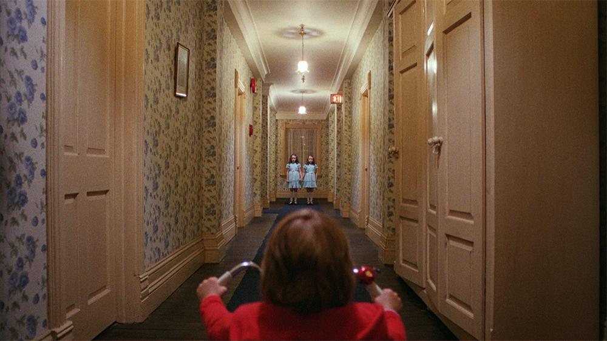

Review
The Shining

The Shining is a great terrifying movie. I'm still not quite sure what it is about but it feels like there is a lot here. You have a father desperate for money takes a job out in the middle of nowhere to take care of a hotel during the winter with his wife and son. He's a writer and is looking for a way to get over his writer's block while providing for the family. He has a lot of internal pressure on himself to write a book. What ends up happening in the movie is a great exploration into the madness of our own minds.
Like all Stanly Kubrick films, this movie has so many great scenes with amazing imagery. The scene with Danny going down a hallway with creepy twins, the scene at the bar, the scene in room 237, the blood in the hallway, the maze, the snowy end, and of course the classic "Here's Johnny!" moment. With just the images and scenes alone, this movie is fantastic. The plot itself and questions pose add a great element of mystery. Watching the father figure slowly turn mad is incredible. As the viewer, we're spooked out by the hotel but maybe we should be spooked out by ourselves. Overall, this movie is a great slow burn horror film but also a great psychological thriller.